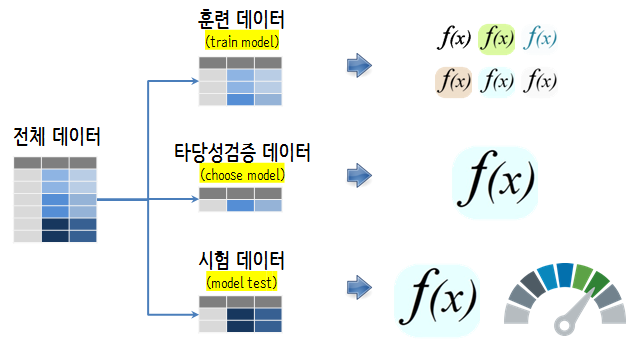

xwMOOC 기계학습
모형식별 및 선택 (yardstick)
1. 기계학습 예측모형 선택 1 2
기계학습 모형을 선정할 때, 인간이 사용하는 경우 성능 상한(Performance Ceiling) 을 가장 복잡한 모형으로 잡고, 컴퓨팅 복잡성, 예측 용이성, 해석 편이성을 고려하여 모형을 선정한다. 예를 들어, 비선형 지지도 벡터 머신(Nonlinear SVM) 혹은 확률숲(Random Forest)의 경우 데이터에 대한 접합은 좋지만, 실제 운영환경으로 배포하기가 그다지 좋지는 못하다.
- 분류문제(classification) 이항회귀모형과 연속형 예측 선형회귀모형은 최종적으로 선정되는 예측모형과 벤치마크 성능을 비교하는 지표로 필히 실행하여 선정한다.
- 기계학습 모형을 최종 모형으로 선정할 때 해석용이성은 떨어지지만, 가장 성능이 좋은 모형으로 선정한다. 예를 들어, 부스팅 나무모형(Boosting Tree Models), 지지도 벡터 머신(Support Vector Machine, SVM)으로 시작하는데 이유는 가장 정확한 최적의 결과를 제공하기 때문이다.
- 최적의 모형이 어떻게 보면 가장 좋은 성능의 상한을 제시하게 되고, 이를 기반으로 최적의 성능에 버금가는 해석이 용이한 모형을 탐색한다. 예를 들어, multivariate adaptive regression splines (MARS), partial least squares, generalized additive models, 나이브 베이즈 모형이 대표적이다.
- 성능은 복잡성이 높은 모형이 기준이 되고, 검토하는 모형은 가장 단순한 모형으로 선정한다.
2. 각 단계별 데이터셋 3
데이터셋을 훈련(train), 타당성검증(validation), 시험(test) 데이터셋을 나누고 데이터의 역할에 맞게 기계학습 모형 선정에 필요한 기능을 갖추는데 활용한다. 훈련 데이터, 타당성검증 데이터, 시험 데이터는 많은 경우 6:2:2 비율로 나누는 것이 일반적이다. 그리고, 모형을 한번 수행하는 것이 아니라 10-fold 교차검증을 5번 반복하는 것이 좋은 성능을 낸다는 연구결과도 있다.

3. 모형 선정 사례 – 독일신용평가 데이터
3.1. 환경설정 및 데이터 가져오기
독일신용평가 데이터를 caret 팩키지에 포함된 것을 사용한다. 훈련데이터와 검증데이터를 반반 나눈다. createDataPartition 함수를 사용해서 쉽게 사용한다. sample 함수를 사용해도 좋다. 데이터 전처리가 깔끔히 되어 있으니 생략한다. 필요하면 더 작업을 해도 좋다.
# 0. 환경설정 ------
library(caret)
library(tidyverse)
library(yardstick)Error in library(yardstick): there is no package called 'yardstick'
# 1. 데이터 ------
## 1.1. 데이터 가져오기
data(GermanCredit)3.2. 데이터 분할
createDataPartition() 함수를 사용해서 우선 훈련 데이터를 먼저 발래내고, 다음으로 타당성검증과 시험 데이터를 순차적으로 발라낸다. 이때, 일반적인 데이터 분할 사례 6:2:2를 반영한다. 즉, 훈련데이터 60%, 타당성검증 데이터 20%, 시험데이터 20%를 반영한다.
## 1.2. 데이터 분할: 훈련, 타당성검증, 시험
### 훈련 vs 검증/시험
in_train <- createDataPartition(GermanCredit$Class, p = c(0.6, 0.4), list = FALSE)
training <- GermanCredit[in_train, ]
validation_test <- GermanCredit[-in_train, ]
### 타당성검증 vs 시험
in_test <- createDataPartition(validation_test$Class, p = c(0.5, 0.5), list = FALSE)
validation <- validation_test[-in_test, ]
testing <- validation_test[in_test, ]3.3. 모형공식
R에 공식 비공식적으로 10,000개가 넘는 팩키지가 존재하고 각 팩키지마다 모형을 명세하는 방식이 다르다. 크게 ~ 공식을 사용하는 방식과 데이터프레임 = 을 사용하는 방식이 있는데 팩키지마다 공식을 명세하는 방식을 준용하면 된다. 중요한 것은 ~, = 좌측은 종속변수, 우측은 독립변수가 위치해 넣으면 된다.
# 2. 예측모형 개발 ------
## 2.1. 예측모형 공식
credit_var <- setdiff(colnames(training), list('Class'))
credit_formula <- as.formula(paste('Class', paste(credit_var, collapse=' + '), sep=' ~ '))3.4. 모형 아키텍처
일반화선형모형(GLM)을 벤치마킹 기본 모형으로 잡고, 독일신용평가 데이터는 분류문제로 CART 모형도 예측모형에 포함하고 Random Forest, GBM, xgBoost를 선택해야하는 모형 아키텍처에 포함시킨다. 모형을 차례로 적합시켜 성능은 가장 뛰어나면서,
- 가장 단순한 모형
- 가장 이해하기 쉬운 모형
- 가장 실운영환경에 배포하기 좋은 모형
이런 모형을 선정한다. 이를 위한 판단기준으로 타당성검증(validation) 데이터를 활용한다. 타당성검증(validation) 데이터는 물론 훈련과정에 포함된 적은 없다.
trainControl() 함수에 method = 'cv'로 설정하게 되면 10-fold 가 지정된다. 이를 반복해서 5회하는 것이 성능이 좋은 것으로 알려져 있다.
## 2.2. 예측모형 아키텍처
ml_control <- trainControl(method = "repeatedcv",
number = 10,
repeats = 5,
sampling = "up",
verboseIter=FALSE)
### 2.2.1. 벤치마크 모형 - 이항회귀모형 적합
glm_m <- train(credit_formula, data = training,
method = "glm", family=binomial(link='logit'),
trControl = ml_control)
### 2.2.2. 의사결정나무모형(cart)
cart_m <- train(credit_formula, data = training,
method = "rpart",
trControl = trainControl(method = "none",
sampling = "up"))
### 2.2.3. 확률숲(Random Forest)
rf_m <- train(credit_formula, data = training,
method = "rf",
trControl = ml_control)
### 2.2.4. gbm
gbm_m <- train(credit_formula, data = training,
method = "gbm",
trControl = ml_control,
verbose = FALSE)
### 2.2.5. xgBoost
xgboost_m <- train(credit_formula, data = training,
method = "xgbLinear",
trControl = ml_control)3.5. 모형 아키텍처 선정
이항회귀모형, 의사결정나무, 확률숲(randomForest), GBM, xgBoost 모형의 성능을 정확도(accuracy)를 기준으로 각각 비교한다.
## 2.3. 모형 아키텍처 선정
model_arch <- validation %>%
mutate(GLM = predict(glm_m, validation),
CART = predict(cart_m, validation),
RF = predict(rf_m, validation),
XGB = predict(xgboost_m, validation),
GBM = predict(gbm_m, validation))
metrics(model_arch, truth = Class, estimate = GLM)Error in metrics(model_arch, truth = Class, estimate = GLM): 함수 "metrics"를 찾을 수 없습니다
metrics(model_arch, truth = Class, estimate = CART)Error in metrics(model_arch, truth = Class, estimate = CART): 함수 "metrics"를 찾을 수 없습니다
metrics(model_arch, truth = Class, estimate = RF)Error in metrics(model_arch, truth = Class, estimate = RF): 함수 "metrics"를 찾을 수 없습니다
metrics(model_arch, truth = Class, estimate = GBM)Error in metrics(model_arch, truth = Class, estimate = GBM): 함수 "metrics"를 찾을 수 없습니다
metrics(model_arch, truth = Class, estimate = XGB)Error in metrics(model_arch, truth = Class, estimate = XGB): 함수 "metrics"를 찾을 수 없습니다
# predict(glm_m, validation, type="prob")사실 모형 아키텍처에 포함된 모든 모형이 동일한 값을 주지는 않는다. 차이가 크다고 하더라도 확률적인 요인에 의한 차이로 밝혀질 수도 있다. 이런 경우 쌍체 \(t\)-검증 (paired t-test)을 사용하여 모형간 유의성을 검증한다. 만약 차이점이 없다면 가장 단순한 모형을 선택한다.
diff_test <- resamples(list(GLM = glm_m,
XGB = xgboost_m))
summary(diff_test)
Call:
summary.resamples(object = diff_test)
Models: GLM, XGB
Number of resamples: 50
Accuracy
Min. 1st Qu. Median Mean 3rd Qu. Max. NA's
GLM 0.5666667 0.6500000 0.7000000 0.6880000 0.7333333 0.8 0
XGB 0.6000000 0.6833333 0.7166667 0.7253333 0.7500000 0.9 0
Kappa
Min. 1st Qu. Median Mean 3rd Qu. Max. NA's
GLM 0.08088235 0.2315447 0.3440519 0.3248065 0.4354193 0.5522388 0
XGB 0.01639344 0.2163625 0.3286830 0.3250742 0.3750000 0.7368421 0
diff(diff_test) %>% summary
Call:
summary.diff.resamples(object = .)
p-value adjustment: bonferroni
Upper diagonal: estimates of the difference
Lower diagonal: p-value for H0: difference = 0
Accuracy
GLM XGB
GLM -0.03733
XGB 0.004676
Kappa
GLM XGB
GLM -0.0002678
XGB 0.9926
3.6. 최종 모형 성능
최종적으로 모형의 성능을 testing 검증데이터를 통해서 사전에 선정한 측도(정확도, accuracy)를 통해 반영한다. xgboost 모형과 GLM 모형의 차이만큼을 모형 성능으로 보고 이를 예측모형으로 적용시킨다.
# 3. 모형성능 ------
testing_perf <- testing %>%
mutate(GLM = predict(glm_m, testing),
XGB = predict(xgboost_m, testing))
metrics(testing_perf, truth = Class, estimate = GLM)Error in metrics(testing_perf, truth = Class, estimate = GLM): 함수 "metrics"를 찾을 수 없습니다
metrics(testing_perf, truth = Class, estimate = XGB)Error in metrics(testing_perf, truth = Class, estimate = XGB): 함수 "metrics"를 찾을 수 없습니다
Randal S. Olson, William La Cava, Zairah Mustahsan, Akshay Varik, Jason H. Moore(2018), “Data-driven Advice for Applying Machine Learning to Bioinformatics Problems”↩
Kuhn, Max, and Kjell Johnson. Applied predictive modeling. New York: Springer, 2013.↩
Kuhn, Max, and Kjell Johnson. Applied predictive modeling. New York: Springer, 2013.↩